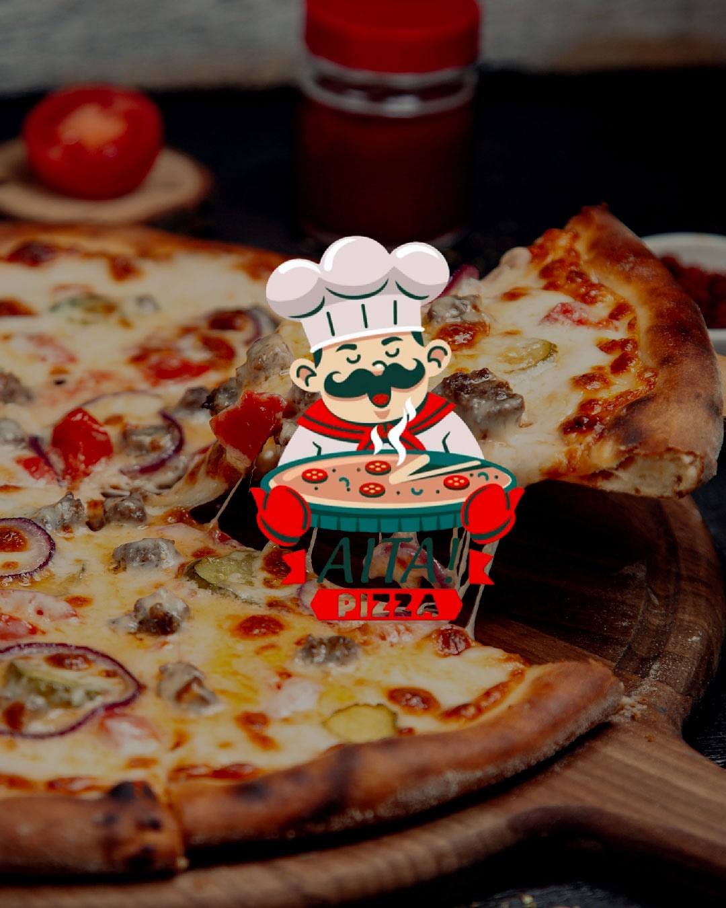

Fundador Aita Pizza,
las famosas pizzas artesanales y tradicionales
de la region Ucayalina.

Aita Pizza nació en el año 2024, inspirada en el nombre de mi hija Aitana. Desde el primer día tuvimos un propósito claro: ofrecer pizzas artesanales preparadas con ingredientes frescos y de la mejor calidad. Cada pizza que sale de nuestro horno está hecha con pasión, tradición y un toque moderno que la hace única. Más que una pizzería, somos un lugar para compartir buenos momentos en familia o con amigos. En Aita Pizza, cada pizza cuenta una historia y queremos que la tuya empiece aquí.